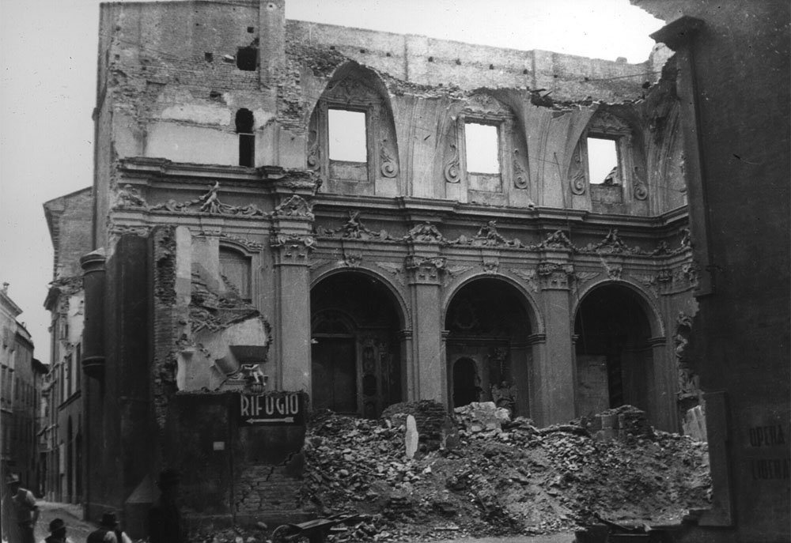

Chiesa di San Salvatore
Poco distante Piazza Roma, in via San Salvatore, è presente un campanile, di fianco ad un pavimento contraddistinto da un perimetro di rocce visibilmente più rosse, ad oggi utilizzato come parcheggio. Fino al 13 maggio 1944, quel terreno era occupata da una chiesa eretta presumibilmente nel 1214, ma venne quasi totalmente distrutta dal bombardamento di quel giorno che colpì il centro storico di Modena. Oggi due lapidi ricordano la distruzione della Chiesa di San Salvatore e le vittime coinvolte dai bombardamenti.